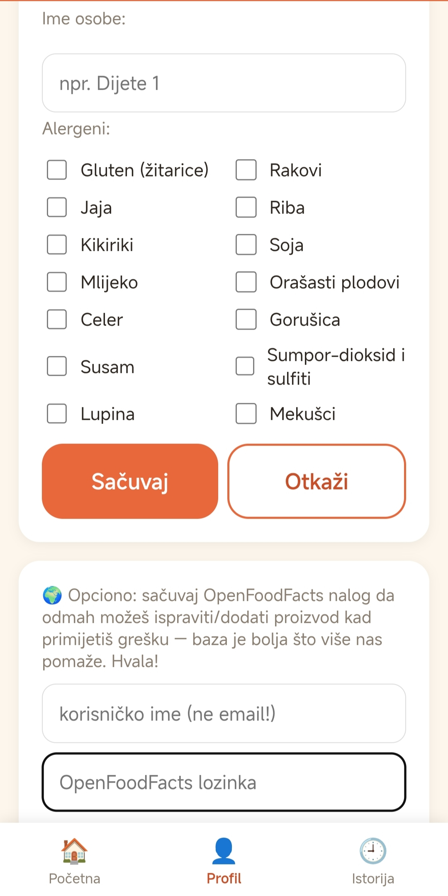
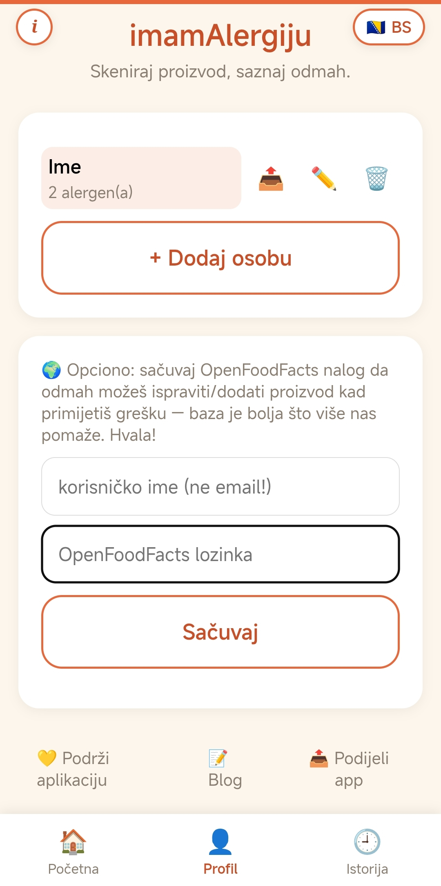
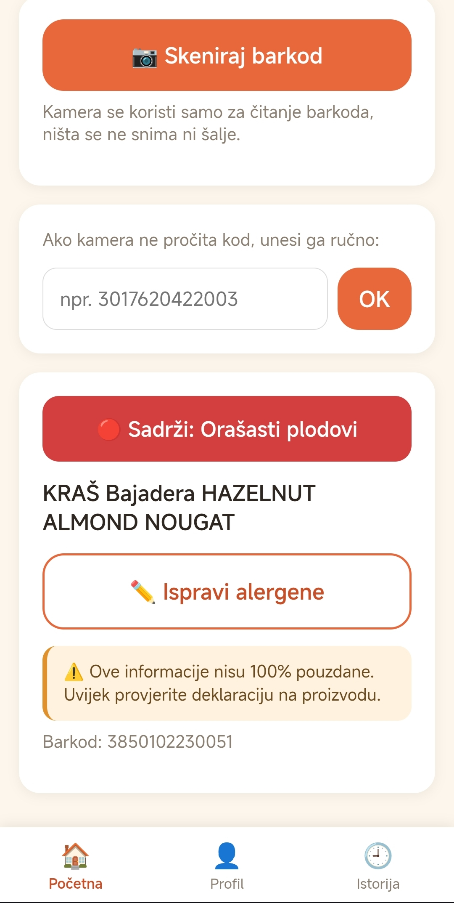
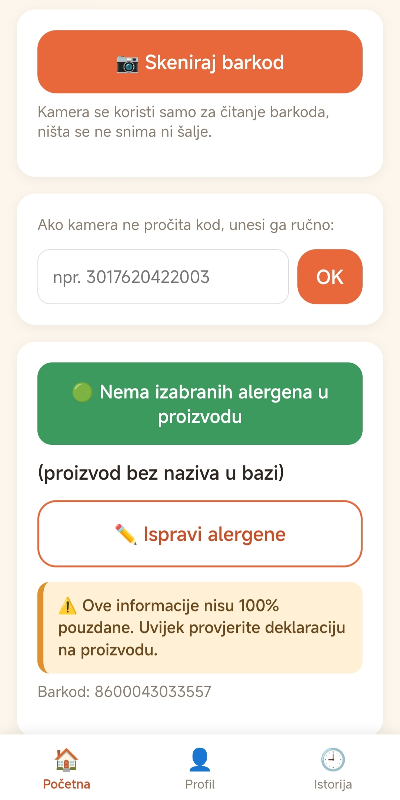
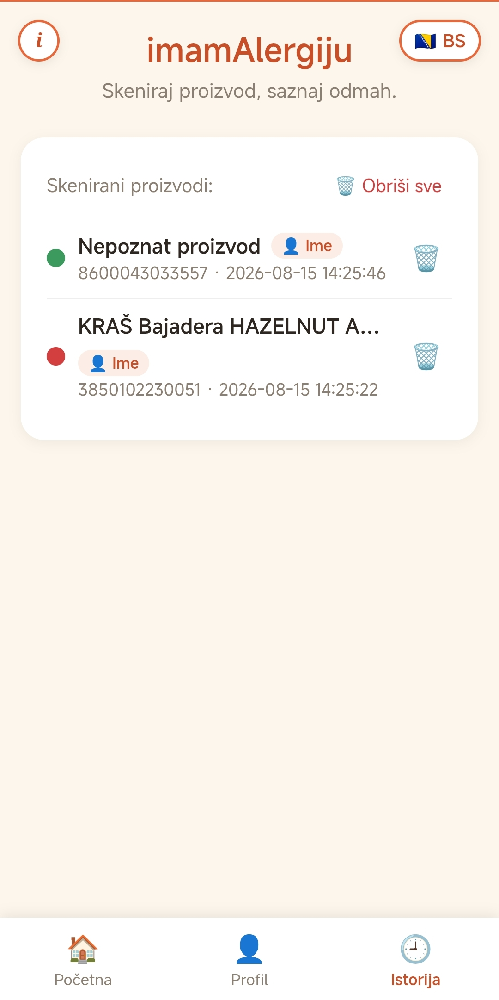
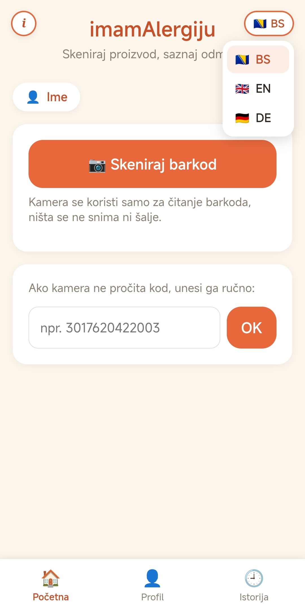

Kako koristiti imamAlergiju — vodič kroz sve funkcije
15. august 2026.

Dosta ljudi me pita "kako se ovo tačno koristi", pa evo kratkog vodiča kroz sve dijelove aplikacije, sa slikama. Traje par minuta, a poslije ti skeniranje ide brzo i bez razmišljanja.
1. Prvo napravi profil
Prije nego počneš skenirati, aplikacija treba znati na koje alergene pazi. To se radi u Profil tabu (dole u navigaciji).

- Ime osobe — upiši ime (npr. "Dijete 1", ili stvarno ime)
- Alergeni — čekiraj sve na šta ta osoba reaguje. Može ih biti više odjednom (npr. mlijeko + orašasti plodovi)
- Sačuvaj — profil se čuva lokalno na tvom telefonu, niko drugi ga ne vidi
Možeš dodati više osoba (npr. za svako dijete posebno). Aplikacija uvijek provjerava proizvod prema trenutno aktivnoj osobi.

Za svaku osobu na listi imaš tri dugmeta:
- 📤 Podijeli — pošalje link kome god želiš (npr. baki, učiteljici), i kad ta osoba otvori link, njena app se sama podesi sa istim alergenima, spremna za skeniranje
- ✏️ Uredi — promijeni ime ili alergene
- 🗑️ Obriši — ukloni tu osobu
Klik na ime u listi je postavlja kao aktivnu osobu.
2. Skeniranje
Na Početnoj je sve što ti treba za sam čin skeniranja.
- Gore lijevo, pilula sa imenom pokazuje ko je trenutno aktivan — klik na nju te vodi nazad na Profil da promijeniš osobu
- 📷 Skeniraj barkod — otvara kameru, uperiš je u barkod, aplikacija sama prepozna kod
- Ako kamera ne uhvati kod (loše svjetlo, oštećena ambalaža) — ispod je polje za ručni unos brojeva sa barkoda
3. Semafor rezultata
Nakon skeniranja, odmah vidiš jasan odgovor.

🔴 Crveno — proizvod sadrži alergen sa liste aktivne osobe. Ne diraj.

🟢 Zeleno — alergen nije pronađen u dostupnim podacima. Postoji i 🟠 narandžasto, za "može sadržati u tragovima".
Ispod semafora uvijek stoji žuti baner upozorenja — čitaj ga ozbiljno, pogotovo kod zelenog. Baza nikad nije 100% pouzdana, uvijek na kraju pogledaj i pravu deklaraciju.
Ako primijetiš da nešto nije dobro označeno, tu je i dugme ✏️ Ispravi alergene (ili ➕ Dodaj proizvod ako ga uopšte nema u bazi) — to direktno šalje ispravku u OpenFoodFacts bazu, za dobrobit svih koji poslije tebe skeniraju isti proizvod.
4. Istorija
Sve što skeniraš se pamti u Istorija tabu — korisno da se podsjetiš šta si već provjeravao.

Svaki red pokazuje boju semafora, naziv proizvoda, za koju osobu je provjereno (bedž pored imena), barkod i vrijeme. Možeš obrisati pojedinačan unos, ili sve odjednom dugmetom Obriši sve.
5. Jezik
Aplikacija govori bosanski, engleski i njemački. Gore desno u ćošku je prekidač jezika.

Klik otvara listu — izabereš zastavicu i sve se odmah prevede. Prvi put kad otvoriš app, sama pogodi jezik prema podešavanjima tvog telefona.
6. Doprinos bazi (opciono)
Baza koju koristimo (OpenFoodFacts) je zajednička — puni je svako ko je koristi. Ako želiš da ti ispravke i dodavanja idu bez kucanja lozinke svaki put, u Profil tabu sačuvaj svoj OpenFoodFacts nalog jednom (vidi se na slici profila iznad, ispod liste osoba).
To je to — sad znaš sve. Ako ti nešto nije jasno ili imaš prijedlog, javi mi se preko bloga ili direktno.